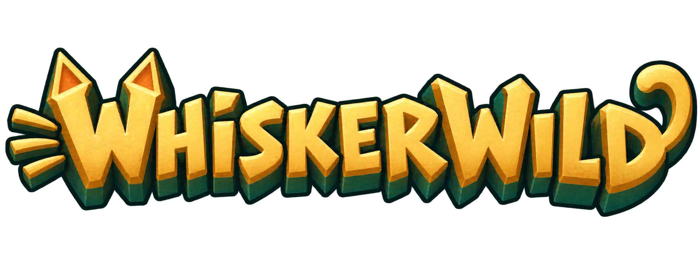

A retro 3D adventure starring a little warrior cat. Explore ten procedurally generated islands, collect golden crystals, and take on goblins and bigger foes with sword and bow. Customize your cat or practise in Training.
In development · Windows PC
Builds
Loading builds…
View available buildsWindows x64 · OpenGL 3.3
Extract the ZIP, then run island64.exe.